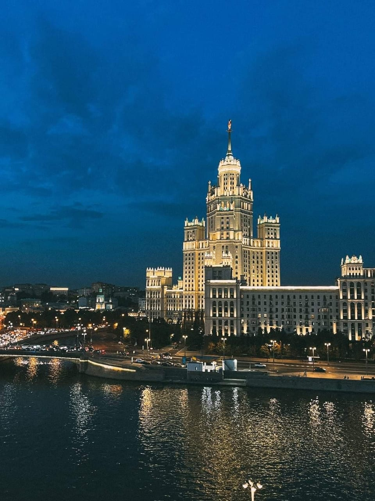
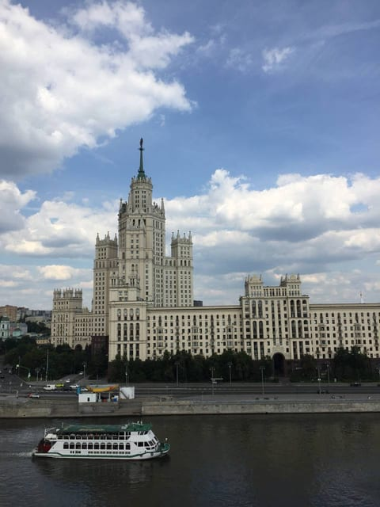

Река в кадре
Крыша на Новокузнецкой
Крыша над Москва-рекой напротив высотки на Котельнической: вода на переднем плане, высотка по центру и теплоходы, которые проходят прямо в кадре.
Эту крышу мы сейчас не предлагаем — посмотрите другие в каталоге.
Что видно с этой крыши
Отсюда высотка на Котельнической видна через реку — и это меняет весь кадр. Вода даёт передний план и отражения, чего нет ни на одной другой нашей крыше с той же высоткой.
Днём панорама светлая и спокойная: белый корпус высотки с колоннадой, зелень набережной, машины по мосту и прогулочные теплоходы, которые проходят под крышей примерно раз в несколько минут. Вечером включается подсветка: высотка становится тёплого золотого цвета, а в воде появляется её отражение и огни набережной.
По бокам панорамы — обычная московская застройка центра, так что кадр не перегружен: взгляд сразу уходит к высотке и реке.
Когда лучше приходить
Работает в оба времени. Днём — светлые кадры с рекой и теплоходами, вечером — подсветка и отражения. Если выбирать одно, берите вечер: подсвеченная высотка над тёмной водой выглядит сильнее.
Кому подойдёт
Подойдёт тем, кому важна вода в кадре, и тем, кто хочет спокойную прогулку без длинных панорам: точка компактная, вид сфокусирован на одном объекте. Хороший вариант для свидания и для съёмки вдвоём.
Как попасть
Подняться можно только вместе с сопровождающим: мы встречаемся у дома в назначенное время, поднимаемся и коротко объясняем правила на площадке. Точный адрес и точку встречи присылаем после подтверждения записи — заранее их не публикуем. Что взять с собой: удобную нескользящую обувь и тёплый слой, вечером на высоте прохладнее, чем на улице. Подробнее — в гиде «Как попасть на крышу в Москве».
Фотографии
Кадры с этой крыши
Все снимки сделаны нами на этой локации — они показывают, что реально видно с точки.

FAQ
Вопросы про эту крышу
Чем эта крыша отличается от Таганской и Марксистской?
Рекой. На всех трёх видна высотка на Котельнической, но только отсюда она стоит за водой — с отражением и теплоходами на переднем плане.
Видно ли отсюда Кремль?
Нет. За Кремлём в кадре — на Таганскую или Курскую. Здесь панорама сфокусирована на высотке и реке.
Можно ли прийти днём?
Да, эта крыша хорошо выглядит и при дневном свете — с зеленью набережной и теплоходами.
Над городом